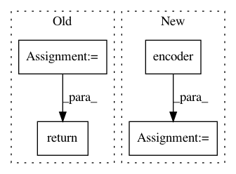

8030eeca74b6634f2a60168516573912aaa9cd65,model/modeling.py,BertForSequenceClassification,forward,#BertForSequenceClassification#Any#Any#Any#Any#,891
Before Change
if labels is not None:
loss_fct = CrossEntropyLoss()
loss = loss_fct(logits, labels)
return loss, logits
else:
return logits
After Change
class BertAttention(nn.Module):
def __init__(self, config):
super(BertAttention, self).__init__()
self.self = BertSelfAttention(config)
self.output = BertSelfOutput(config)
def forward(self, input_tensor, attention_mask):
self_output = self.self(input_tensor, attention_mask)
In pattern: SUPERPATTERN
Frequency: 3
Non-data size: 4
Instances
Project Name: NVIDIA/sentiment-discovery
Commit Name: 8030eeca74b6634f2a60168516573912aaa9cd65
Time: 2018-11-20
Author: raulp@nvidia.com
File Name: model/modeling.py
Class Name: BertForSequenceClassification
Method Name: forward
Project Name: dmlc/gluon-nlp
Commit Name: 3c874575bf40e8b1fa2280371131a8f29ebb3e98
Time: 2020-07-28
Author: xshiab@connect.ust.hk
File Name: src/gluonnlp/models/mobilebert.py
Class Name: MobileBertModel
Method Name: hybrid_forward
Project Name: dmlc/gluon-nlp
Commit Name: 3c874575bf40e8b1fa2280371131a8f29ebb3e98
Time: 2020-07-28
Author: xshiab@connect.ust.hk
File Name: src/gluonnlp/models/roberta.py
Class Name: RobertaModel
Method Name: hybrid_forward